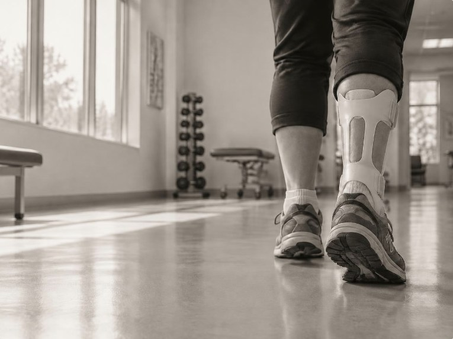

For stroke survivors & the people who walk beside them
Your ankle brace keeps you steady. It may also be holding back your stride.
Most people recovering from a stroke are handed the same hard plastic brace. It prevents falls — but it also blocks the push that powers every step. Here’s what that means, what a softer option looks like, and three questions worth asking your physical therapist.
Start the 5-step guide
#1
The ankle-foot brace is the most common prescription after a stroke.
It stabilizes the ankle but restricts push-off, the key to an efficient step.
−10%
Walking energy dropped about 10% when stroke survivors used a soft exosuit.
Source: (Harvard & Boston University study, 2017)
Step one
Every step starts with a push
Walking feels automatic, but each step has a rhythm. Your heel lands, your body rolls over your foot, and then — just before your foot leaves the ground — your calf muscles point your toes down and push off. That push is what sends you forward into the next step.
After a stroke, the muscles on one side often get weaker. The push on that side can shrink, steps get shorter, and walking takes more effort. That’s why the push-off moment matters so much in recovery.
One full step, start to finish
Heel strike
Heel touches down
Standing
Body rolls over the foot
Push-off
Heel lifts, foot pushes
Swing
Leg swings forward
Step two
What the standard brace does — and doesn’t
The brace most stroke survivors get is called an ankle-foot orthosis, or AFO. It’s a hard plastic shell that runs from the calf to the sole of the foot. It does real good: it holds the ankle steady and keeps the toes from dragging and catching.
The trade-off is that a rigid brace can’t tell the difference between a bad wobble and a good push. By holding the ankle still, it also restricts the push-off that normal walking depends on (Harvard & Boston University study, 2017). Try the comparison below.
Healthy ankle
The heel lifts, the foot pushes
Calf muscles point the foot down and lift the heel. That push sends the body forward into the next step.
Simplified illustration of the push-off moment, not measured data.
Rigid brace
Steady — but stuck
A hard plastic ankle-foot brace holds the ankle in place and keeps the toes from catching. It also keeps the ankle from bending down, so the heel barely lifts and the push is weak. (Harvard & Boston University study, 2017)
Simplified illustration of the push-off moment, not measured data.
Soft exosuit
Helping the ankle move on its own
A cable runs down the back of the leg to the heel. At the moment of push-off, a small motor at the waist pulls it — helping the ankle do its own job instead of locking it. (Harvard & Boston University study, 2017)
Simplified illustration of the push-off moment, not measured data.
Step three
A softer kind of help: the exosuit
A soft exosuit is a wearable device made mostly of fabric — closer to clothing than to a robot. Instead of a stiff frame, it uses your own skeleton for structure and adds a small, well-timed pull right when your ankle needs it (ETH Zurich review, 2022).
In a study from Harvard and Boston University, stroke survivors walked with a soft exosuit that pulled on a cable at the ankle. It strengthened their push-off and lowered the energy it took to walk (Harvard & Boston University study, 2017).
Anatomy of a soft exosuit
Waist belt
Holds the motor and battery, so the leg itself stays light.
Cable
Runs down the back of the leg, a bit like a tendon.
Calf wrap
Soft fabric that spreads the pull comfortably.
Heel anchor
Where the pull reaches the foot to boost push-off.
Energy it takes to walk
Stroke survivors, before vs. with help · starting point set to 100
−10%
Step four
So why isn’t everyone using one?
Soft exosuits aren’t a perfect replacement. They’re built for people who can still walk on their own — even slowly — not for someone who needs a device to hold up their body weight. Most of the research so far comes from short lab tests, not months of everyday use (ETH Zurich review, 2022).
The biggest hurdle may simply be habit. The rigid brace is the established standard (Harvard & Boston University study, 2017), and the way devices are made and covered by insurance is built around it. That leaves a gap between what research shows and what patients are offered.
| Rigid brace | Soft exosuit | |
|---|---|---|
| How it helps | Trade-off: Holds the ankle in one position | Strength: Assists the ankle’s own motion |
| Push-off | Weakness: Restricted | Strength: Boosted at the right moment |
| Made of | Trade-off: Hard plastic shell | Strength: Fabric, cables, a small waist motor |
| Weight on the leg | Trade-off: The whole brace sits on the leg | Strength: Motor and battery ride at the waist |
| Can carry body weight | Strength: Gives firm support | Weakness: No — made for people who can still walk |
| Where you’ll find it | Strength: The usual prescription after stroke | Weakness: Mostly research labs and specialized clinics |
| Long-term evidence | Strength: The established clinical standard | Trade-off: Mostly short lab studies so far |
Where each device is today
Your next step
Bring these three questions to your next physical therapy appointment.
“Is my brace limiting how well I push off when I walk?”
“Does this clinic, or one nearby, offer exosuit-assisted gait training?”
“Would that kind of training be a good fit for me?”
About this guide
Push Off was created by Conner Chinn for an English class project on sharing research with the public. It’s based on a longer research paper about soft robotic devices for people recovering from stroke, injury, or limb loss.
The research behind it
- A soft robotic exosuit improves walking in patients after stroke, L. N. Awad et al., Science Translational Medicine, 2017. The Harvard and Boston University study behind the push-off problem and the 10% energy number. It tested short sessions with a small group, so it doesn’t show long-term, at-home results.
- Soft robotic suits: State of the art, core technologies, and open challenges, M. Xiloyannis et al., IEEE Transactions on Robotics, 2022. A peer-reviewed review from ETH Zurich and Heidelberg University on how soft suits work and what’s still unsolved. One author’s lab built one of the suits it discusses.
For related research on soft devices for the hand, see the Dutch home-use glove study (2024), the National University of Singapore glove study (2017), and the Shanghai Jiao Tong and MIT soft prosthetic hand (2023).
This guide is for learning only and is not medical advice.